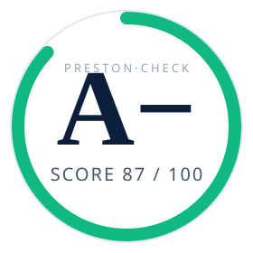

Open-source · Apache 2.0 · v1.7.3
724 security checks across 33 reputable frameworks — PCI-DSS, MiCA, DORA, NYDFS, OWASP, NIST, CCSS, FATF — hand-curated and auto-evolved from live threat intelligence, with AI-augmented findings and one-click patch suggestions. Runs in seconds. Your code never leaves your machine.

Three commitments
Most security scanners are general-purpose. Preston-Check is fintech-narrow — its catalog is curated, not crawled, and every check cites the framework control or real-world incident it stems from.
Every check, every framework filter, every report format runs free. The commercial product wraps the output, not the engine.
The grep catalog runs first. Then an LLM filters false positives, explains in plain English, and (with --ai-fix) writes the patch.
Telemetry is opt-in. AI calls are opt-in. --airgap kills every outbound request. The privacy promise is auditable in 30 lines of bash.
In your terminal
Colored pass/fail/warn output, a final score, and a markdown report your auditor can sign off on. Same engine in the CLI, GitHub Action, Docker image, and Homebrew formula.
============================================================================ Preston-Check — Pre-Deployment Security Audit 2026-05-04 14:22:08 ============================================================================ App: payments-api Lang: typescript (primary) | TypeScript(118) Solidity(7) Mode: FULL (all enterprise security checks) License: free tier (no license installed) OSS: detected (Apache-2.0) — Pro features granted free for this repo Telemetry: opt-in (anonymous score reported) ---------------------------------------------------------------------------- P-01: Hardcoded Secrets [PASS] P-01 Hardcoded secrets No hardcoded secrets in source P-05: Idempotency Guards [PASS] P-05 Webhook idempotency Idempotency middleware present P-12: Balance Validation [FAIL] P-12 Balance validation No balance validation before withdrawals P-103: Double-Spend Prevention [FAIL] P-103 Money idempotency Transfer endpoint missing dedup key P-308: Bridge Replay Protection [WARN] P-308 Bridge replay Cross-chain handler accepts unsigned msgs P-712: Refund / Claim Authorization Missing [PASS] P-712 Refund authorization msg.sender enforced PASS: 261 FAIL: 5 WARN: 21 SKIP: 7 Score: 88% Grade: A−
What ships in the box
284 hand-curated main + 420 threat-intel-promoted + 20 deep smart-contract. Each check cites its framework control and the real-world incident it traces back to.
Pass --ai-fix, get a unified diff per finding. Applies cleanly with git apply. Cached per finding so reruns are free.
Weekly NIST NVD ingest drafts new checks into community/proposed/. The catalog grows without you babysitting it.
Single A–F letter grade plus 0–100 numeric score. Calibrated against opt-in telemetry from peer fintechs.
10 deep checks (P-700 to P-719) traced to real production audit findings — HTLC, cross-chain replay, governance attacks, oracle manipulation.
Group findings by framework control (PCI-DSS 6.5.1, SOC 2 CC6.1, MiCA Art 27). Hand the PDF to your auditor.
GitHub Action, GitLab CI, CircleCI, pre-commit hook, Docker image, Homebrew, raw shell. Same exit codes, same report.
--critical-only, --high-and-up, --framework MiCA. Run the slice that matches the gate you're protecting.
SaaS layer for multi-repo aggregation, branded PDFs, billing, license issuance, threat-intel triage. Free scanner stays free.
33 reputable frameworks
Every check carries the framework citation in its metadata. Filter by --framework "PCI-DSS" to produce a PCI-only audit; same for any other.
Pricing
The scanner — every check, every framework filter, every report format — is Apache 2.0. The portal is what you pay for: branded PDFs, multi-repo dashboards, compliance evidence, license management.
Why "Preston-Check"
Preston X created multiple fake accounts on a production fintech platform. Bypassed 2FA. Ran 21,201 automated session-polling calls. Probed for race conditions and information leakage. Every check in the catalog traces back to a lesson from that attack — or one like it.
The pattern library was validated against a base of over 1.3 million logged session and request traces captured during the incident — every authentication flow, withdrawal attempt, configuration probe, session lifecycle, and rate-limit interaction. Each check graduates to the catalog only after surviving that corpus, which is why Preston-Check's false-positive rate is materially lower than tools built only against synthetic fixtures.
The catalog is curated, not crawled. Every check is grounded in a real incident, a real framework control, or a real production audit finding — which is why Preston-Check produces fewer false positives than tools five times its size.
One command. No signup. No telemetry by default. Apache 2.0 forever.